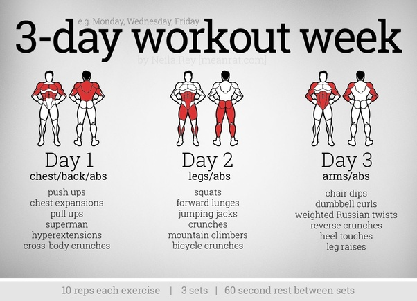

분할

분할 운동이란 위의 그림에서와 같이 근육부위를 나누어 운동함을 의미한다. 근육의 성장은 휴식때에 발생하기에 충분한 휴식의 시간을 만들어 내기위해 고안된것이 분할 훈련법이다.
크게 전신, 2분할, 3분할, 4분할이 있는데 분할 설정에 우선순위는 한주에 얼마나 운동이 가능한가이다. 빈도수에 따라 분할프로그램이 달라진다.
약물을 사용하지 않는 네츄럴 운동자는 3분할을 진행함으로써 근육 부위당 주2회 정도의 자극을 줄 수 있어 근육에 충분한 자극을 주기에 용이하다.